G = ffe_elite |> as_tbl_graph()Advanced Visualization Techniques
No exercises in this one - I’m just going to show you a few advanced techniques in ggraph in case you want to use them in your final projects.
For each of these, we’ll use the ffe_elite network as an example.
Faceting
The first is faceting. This lets you break a network apart based on some variable. For example, this shows different networks based on the university that a person attended.
G |>
ggraph() +
geom_edge_fan() +
geom_node_point() +
facet_nodes(~university)Using "stress" as default layout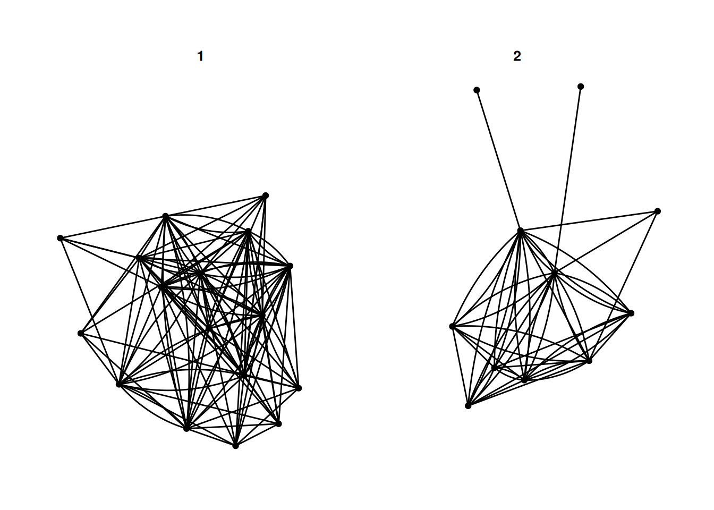
There are a few different options - facet_nodes as used above, splits a network based on node attributes. facet_edges keeps the nodes in the same position, and filters the edges based on some attribute of the edges. For example, this shows reciprocated and non-reciprocated edges.
G |>
activate(edges) |>
mutate(mutual = edge_is_mutual()) |>
ggraph() +
geom_edge_fan(alpha = .3) +
geom_node_point() +
facet_edges(~mutual)Using "stress" as default layout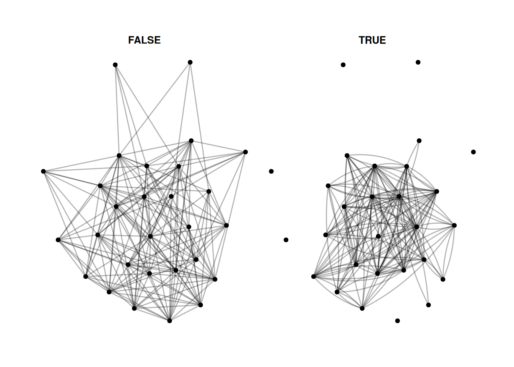
Finally, facet_graph lets you facet by node and edge attributes at the same time.
Let’s just combine the two above and facet by university and whether edges are mutual.
G |>
activate(edges) |>
mutate(mutual = edge_is_mutual()) |>
ggraph() +
geom_edge_fan(alpha = .3) +
geom_node_point() +
facet_graph(mutual~university)Using "stress" as default layout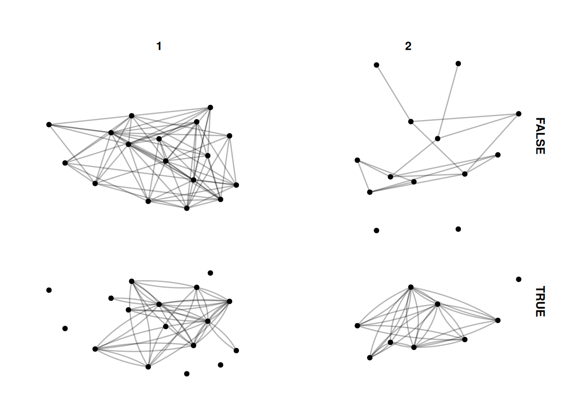
Calculating group statistics
Sometimes we might want to calculate group-level statistics and then compare each node to the group they are in. This is a bit complicated, and takes some practice to do different things. This is just one example, but there are lots of different approaches you can do with grouping.
Here, we group the network by university. Then, we calculate the median birth year for people who attended each university, and create the variable older_at_univ which measures whether they are older or younger than the median for their university, and color the nodes by that measure.
This is a bit of a silly measure for this network, but you might want to do something like adjusting for gender when visualizing some variable.
G |>
activate(nodes) |>
group_by(university) |>
mutate(older_at_univ = birthdate < median(birthdate)) |>
ggraph() +
geom_edge_fan(alpha=.2) +
geom_node_point(aes(color = older_at_univ), size= 3)Using "stress" as default layout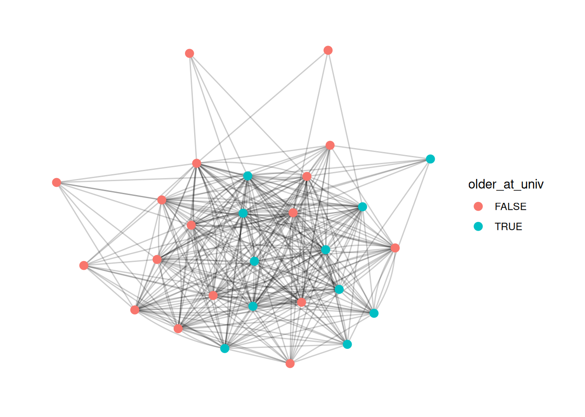
Calculating network-level statistics for groups
A related, but even trickier approach is to create network-level statistics for groups. For example, you might want to show the difference in density for each of the universities. To do that, we have to use morph from tidygraph. This makes a temporary representation of a graph, in our case, a temporary set of graphs split by university. We can then use the temporary representations to calculate statistics and then unmorph the statistics back into the original graph.
G = G |>
morph(to_split, university) |>
mutate(university_density = edge_density(.G())) |>
unmorph()Splitting by nodesThis is a bit silly, as now we have a university_density entry for each node, which is the same for every node that went to the same university. However, we can use it, for example, to create a bar graph for the density of each university. Again, this is beyond what we covered in class, but basically I’m just getting the density values for each university and plotting them.
G |>
activate(nodes) |>
mutate(university = as_factor(university)) |>
as_tibble() |>
group_by(university) |>
summarize(university_density = mean(university_density)) |>
ggplot() +
geom_col(aes(x = university, y = university_density, fill = university)) +
theme_minimal()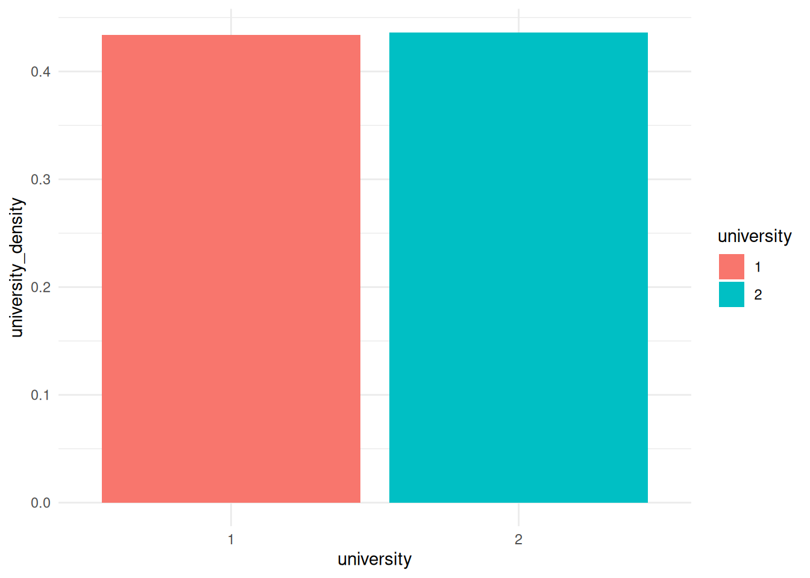
Homophily
One visualization that I really like colors the edges based on how similar two nodes are. For example, we may want to show whether people have similar ages as their neighbors.
So, we use mutate to create a new edge variable based on the absolute distance between birthdates for the two nodes on either side of the edge.
G |>
activate(edges) |>
mutate(age_diff = abs(.N()$birthdate[from] - .N()$birthdate[to])) |>
ggraph(layout = 'stress') +
geom_edge_fan(aes(color = age_diff), alpha = .4) +
geom_node_point(aes(color=birthdate), size = 3) +
scale_edge_color_gradient2()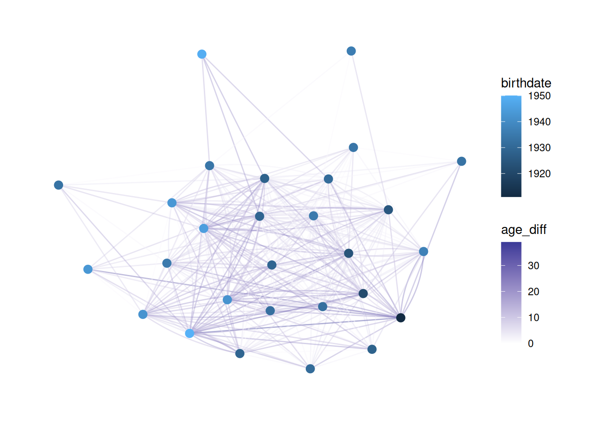
This is tricky to understand.
Basically, we need to create an edge variable based on something about the nodes. However, when we activate the edge table we don’t have information about the nodes. .N() lets us access the nodes table from the edge table, and from and to refer to the node that an edge is coming from and the node it is going to, respectively.
So, .N()$birthdate refers to the birthdate column in the nodes table, and .N()$birthdate[from] refers to the value of birthdate for the from node.
Putting it all together, abs(.N()$birthdate[from] - .N()$birthdate[to]) subtracts the birthdate of the “to” node from that of the “from” node, and takes the absolute value. It saves that as age_diff and then colors edges based on that.
Changing color palettes
You may want to use different color palettes than R’s defaults. One of my favorites is the viridis palette which is prettier and easier to read.
In order to change the color palette, you use scale_ functions. There are two functions - one for nodes (scale_color_X) and one for edges (scale_edge_color_X).
First, I’ll show how to change colors using a pre-existing palette (viridis)
G |>
ggraph(layout = 'stress') +
geom_edge_fan(alpha = .2) +
geom_node_point(aes(color = religion), size = 3) +
scale_color_viridis()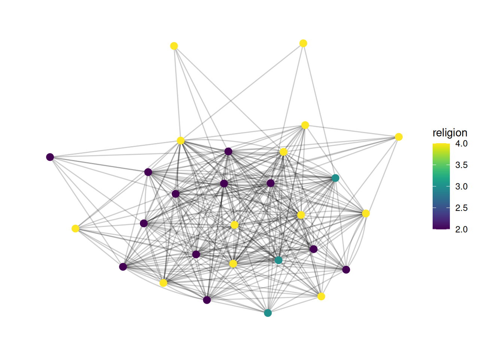
If we want to explicitly treat a variable as a factor, then we need to tell the scale that this is a discrete variable, like so:
G |>
ggraph(layout = 'stress') +
geom_edge_fan(alpha = .2) +
geom_node_point(aes(color = as_factor(religion)), size = 3) +
scale_color_viridis(discrete = TRUE)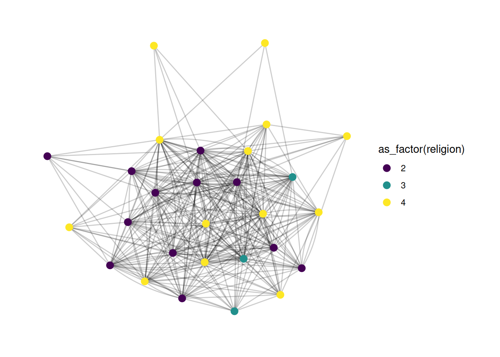
You can also create a manual scale, where you provide specific colors for each value, like so:
G |>
ggraph(layout = 'stress') +
geom_edge_fan(alpha = .2) +
geom_node_point(aes(color = as_factor(religion)), size = 3) +
scale_color_manual(values = c("2" = "green", "3" = "orange", "4" = "blue"))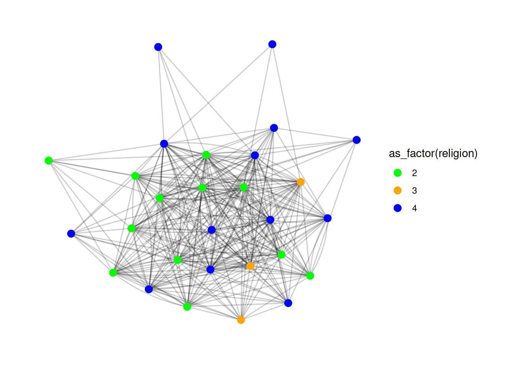
Finally, you may want to look into scale_color_brewer, which gives access to a bunch of great palettes. You can try them out by changing the palette parameter. More info here.
Here’s a quick example - try changing the palette to different numbers.
G |>
ggraph(layout = 'stress') +
geom_edge_fan(alpha = .2) +
geom_node_point(aes(color = as_factor(religion)), size = 3) +
scale_color_brewer(palette = 1)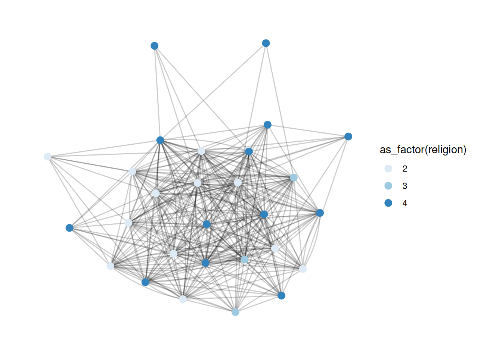
Changing legend titles
A lot of the plots above have really ugly legend titles. It’s super easy to change those - it’s just the name parameter in scale_ functions.
G |>
ggraph(layout = 'stress') +
geom_edge_fan(alpha = .2) +
geom_node_point(aes(color = as_factor(religion)), size = 3) +
scale_color_viridis(discrete = TRUE, name='Religion')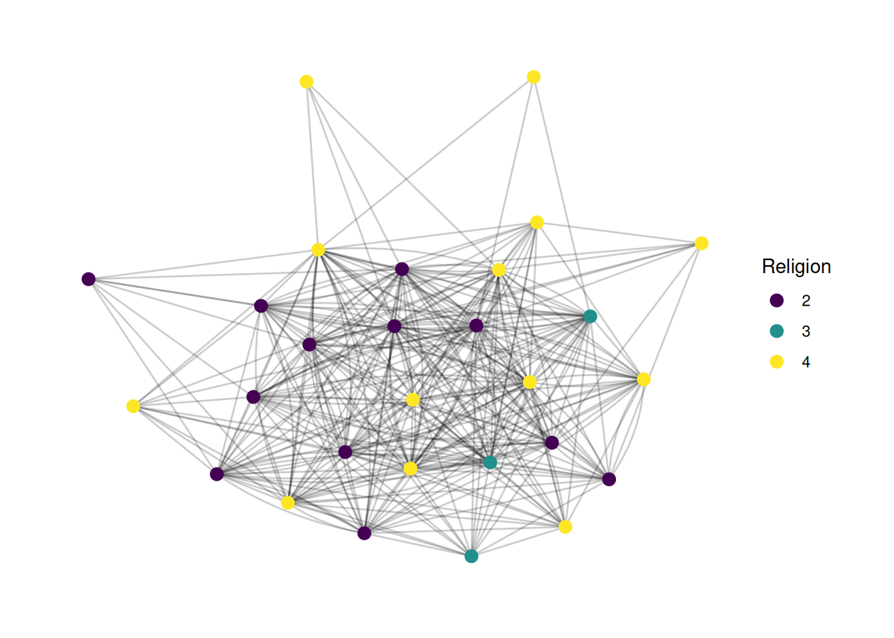
We can also add a title to the whole plot if we want. This is another layer.
G |>
ggraph(layout = 'stress') +
geom_edge_fan(alpha = .2) +
geom_node_point(aes(color = as_factor(religion)), size = 3) +
scale_color_viridis(discrete = TRUE, name='Religion') +
labs(title="French Financial Elite Network")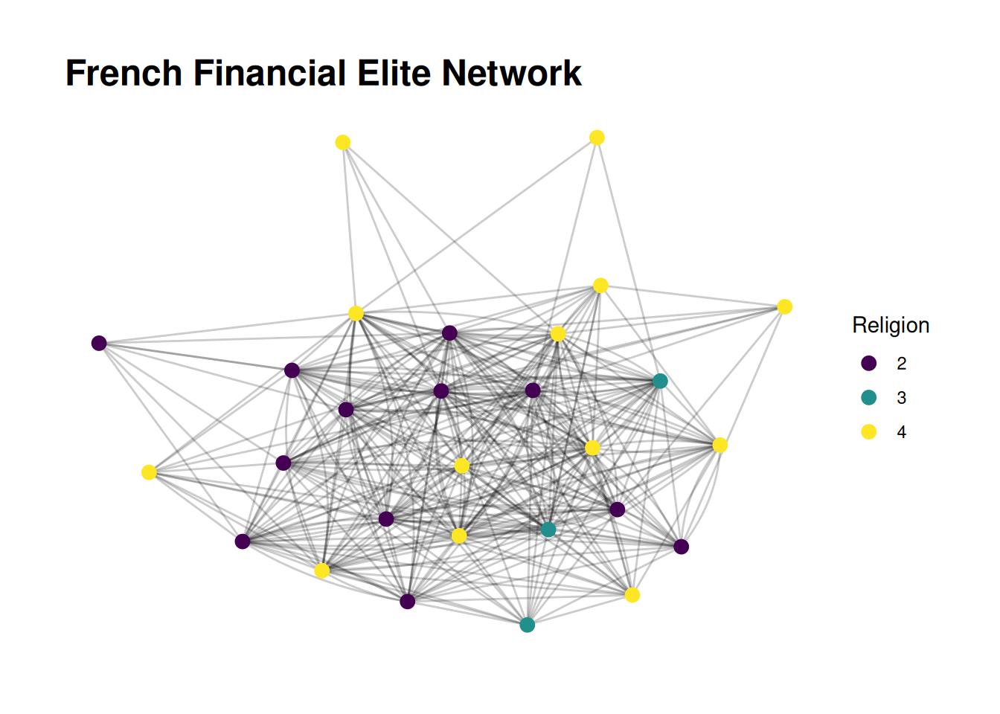
Changing variable values
Finally(!), we might want to change the variable names to make them more descriptive. For example, maybe we know that religion 2 is Catholic, 3 is Protestant, and 4 is non-religious. There are a few ways to change the labels. One is to actually change the data. We may want to do this if we want to display it in multiple plots. We can also just change the labels, in the scale function.
G |>
ggraph(layout = 'stress') +
geom_edge_fan(alpha = .2) +
geom_node_point(aes(color = as_factor(religion)), size = 3) +
scale_color_viridis(discrete = TRUE, name='Religion', labels=c("2" = "Catholic", "3" = "Protestant", "4" = "Non-religious")) +
labs(title="French Financial Elite Network")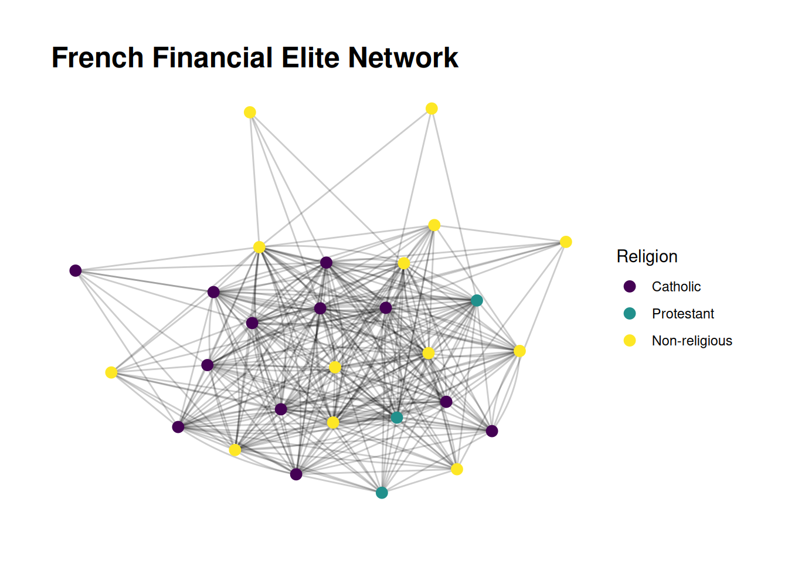
That is not a bad-looking plot!